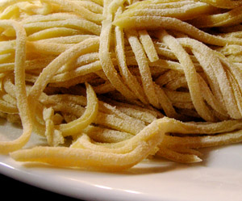

Ragout della Nonna (nach Giovanna Fiorentina Ottaviani)
6 von 6eine zwiebel und eine karotte fein hacken. mit hausgemachtem olivenöl anbraten. 500 g hackfleisch und eine knoblauchzehe dazugeben und kräftig anbraten. mit einem schluck cognac ablöschen. ca. 6 dl hausgemachte pelatti beigeben. so lang wie möglich kochen. mit salz und pfeffer abschmecken
